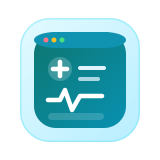

AI-powered SaaS that helps clinicians transform consultation notes into visit summaries, next steps, and patient-friendly email drafts.

You will be redirected automatically in a few seconds. If not, click here.